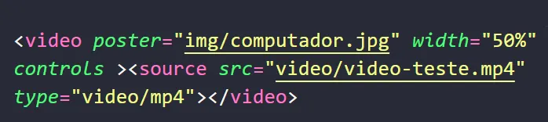
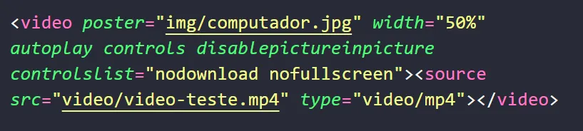

A tag de vídeo e praticamente igaul a do audio com algumas pequenas alterações, veja a seguir:

O resultado é:
Podemos adicioanr alguns atributo, veja a seguir quais são eles e pra que servem:
O atributo poster serve para adicionarmos uma capa para nosso video.
O atributo width serve para aleterarmos o tamanho.
O atributo autoplay é utilizado caso o desnvolvedor queira que o video comece a reproduzir
automaticamente para o usuario.
O atributo controls colocamos para aparecer os comandos de video para o usuario como play, voluem do
video, opção de download e etc.
O atributo disablepictureinpicture seerve para que o usuario nao coloque o video em picture-in-picture
O atributo controlslist serve para utilizarmos o nodownload e o nofullsreen, ou seja, o usuario fica
incapacidado dee baixar o video e de colocar ele em tela cheia.
No codigo ficaria da seguinte forma:

O resultado seria:
Conclusão
A tag <video> é uma excelente ferramenta para incorporar vídeos diretamente em páginas HTML, funcionando
de maneira semelhante à tag <audio>, mas com recursos visuais adicionais. Com essa tag, podemos exibir
vídeos sem a necessidade de plugins externos, garantindo uma experiência integrada para o usuário.
Diversos atributos podem ser utilizados para personalizar a exibição do vídeo. O poster define uma
imagem de capa antes da reprodução, width ajusta o tamanho, e controls permite ao
usuário interagir com o player. Além disso, autoplay pode ser usado para iniciar a reprodução
automaticamente, enquanto disablepictureinpicture e controlslist="nodownload
nofullscreen" ajudam a restringir funcionalidades como o modo picture-in-picture, o download e a tela
cheia.
Com essas opções, a tag <video> oferece flexibilidade e controle sobre a reprodução de mídia, garantindo
uma experiência de visualização personalizada e otimizada para diferentes necessidades.